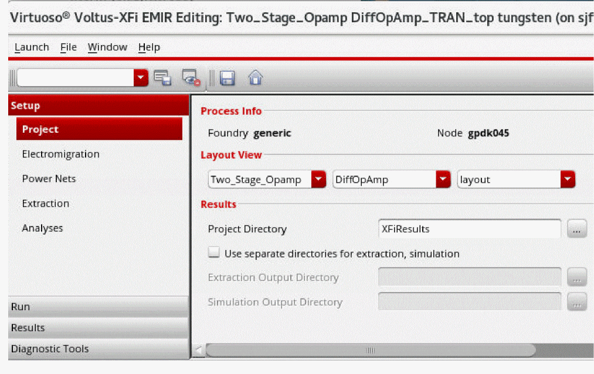

Specifying EM-IR Project Settings
Before running the EM-IR analysis, you must specify the settings for the current run. Do the following:
- Launch Voltus-XFi.
-
Choose Setup – Project from the task pane.

-
In the Process Info section, the Foundry and Node fields are disabled. The foundry and node for which you want to run EM-IR analysis need to be specified through the
foundryandnode.cdsenv variables. - In the Layout View section, select a library and its corresponding cell and view.
- In the Results section, specify the Project Directory in which the results need to be saved. The default directory name is XFiResults. The Voltus-XFi default directory will have the following structure: XFiResults/lib_name/cell_name/view_name.
-
(Optional) Select the Use separate directories for extraction, simulation check box if you want to save the results for extraction and simulation data in separate directories.
If this check box is selected, specify the Extraction Output Directory and Simulation Output Directory, in which you want to save the extraction and simulation results, respectively.
Related Topics
- Specifying Custom Foundry and Node Information
- Launching Voltus-XFi in the GUI Mode
- Environment Variables
Return to top